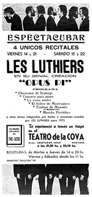
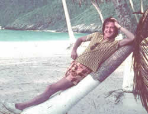

La fundación de Les Luthiers
 Para Masana (de 30 años), Mundstock (24), Rabinovich (23) y
Maronna (19), la noche en que se retiraron de I Musicisti, lejos de
ser un final, fue apenas un principio.
Para Masana (de 30 años), Mundstock (24), Rabinovich (23) y
Maronna (19), la noche en que se retiraron de I Musicisti, lejos de
ser un final, fue apenas un principio.
Al día siguiente de la escisión se reunieron para fundar un nuevo grupo. Maronna propuso el nombre Les Luthiers. A todos les pareció adecuado, dado que una de las características más llamativas del grupo eran los instrumentos fabricados por ellos mismos.
Mientras el grupo se abocaba al desarrollo del nuevo espectáculo, surgió la posibilidad de hacer un show privado, para la Editorial Abril. Bruno Pagliai, miembro del directorio de la mencionada empresa y representante de la Editorial Novaro de México, estaba por venir a la Argentina con su esposa, la actriz Merle Oberon, “recordada protagonista de Cumbres Borrascosas, y símbolo vivo de toda una época de la cinematografía mundial”, como la definió la revista Siete Días.
La empresa decidió organizar un agasajo a Oberon con algún espectáculo artístico original, para lo cual se le ocurrió contratar a Les Luthiers.
La audiencia, que incluyó a numerosos ministros, secretarios gubernamentales y empresarios, entre ellos Agustín Rocca, de Techint) disfrutó y aplaudió las ocurrencias de Les Luthiers.
Poco después, Les Luthiers estrenó, en el Di Tella, su espectáculo "Les Luthiers cuentan la ópera", que consistía en una versión modificada de IMYLOH.
El regreso al Di Tella con una obra de esa envergadura, les planteó un problema logístico. Eran sólo cuatro integrantes para cubrir una gran cantidad de personajes. Fue así como invitaron a participar en este espectáculo a distintos artistas. Entre ellos, el actor Víctor Andrés Laplace y el pianista Armando Krieger.
Nuevamente, la obra fue un éxito y provocó elogiosos comentarios entre la prensa.
Al poco tiempo, Les Luthiers fue convocado para componer e interpretar la banda de sonido de una obra de teatro llamada "Angelito el secuestrado", escrita por Leal Rey y dirigida por Jorge Petraglia. De aquella experiencia quedaron canciones que luego pasarían a formar parte del repertorio de Les Luthiers. Algunas de ellas se pueden escuchar en el CD de audio que acompaña al libro "Gerardo Masana y la fundación de Les Luthiers".
"Angelito el secuestrado" se estrenó el 16 de enero de 1968 en el teatro Caminito del barrio porteño de La Boca.
 Les Luthiers en varias emisiones." width="250" height="210" border="0">La dupla Masana-Maronna también trabajó intensamente
componiendo canciones para el ciclo televisivo "Todos somos mala
gente", que se emitió por Canal 7 a mediados de 1969. Salía
al aire los miércoles a las 21. Todas las semanas, Les Luthiers
tenía que preparar un número acorde al estilo del programa.
Por lo general eran canciones de humor negro.
Les Luthiers en varias emisiones." width="250" height="210" border="0">La dupla Masana-Maronna también trabajó intensamente
componiendo canciones para el ciclo televisivo "Todos somos mala
gente", que se emitió por Canal 7 a mediados de 1969. Salía
al aire los miércoles a las 21. Todas las semanas, Les Luthiers
tenía que preparar un número acorde al estilo del programa.
Por lo general eran canciones de humor negro.
El ciclo contó con la participación de importantes artistas, como Graciela Borges, Sergio Renán, Ulises Dumont, Perla Caron, Iris Marga y Susana Rinaldi.
En 1969, Les Luthiers ensayaba en el Di Tella su nuevo espectáculo, el oratorio profano "Blancanieves y los siete pecados capitales". En ese momento, sintieron la necesidad de convocar nuevamente a Carlos Núñez Cortés, quien aceptó de inmediato.
Al poco tiempo, Núñez Cortés estaba escribiendo música intensamente. Compuso dos escenas, armonizó varias partes de la obra e incluyó al tubófono parafínico cromático en la partitura. También intervino en el casting de los actores invitados, Moira Bartoli y Julio López. Este último tiene un recuerdo nítido de Gerardo: “Era desgarbado en su andar y su manera de caminar. Una vez lo vi llegar con un papel donde había anotado un nuevo arreglo, que los luthiers tocaron en el piano y quedaron encantados. Me encantaba ver trabajar con tanta humildad a alguien que, al decir de sus colegas, sabía tanto. Además era muy cariñoso y afable”, dice.
 El 14 de agosto de 1969, se estrenó en el Di Tella "Blancanieves
y los siete pecados capitales", cuyo argumento giraba en torno
a una sesión de Blancanieves con su psicoanalista, que se emitía
en off.
El 14 de agosto de 1969, se estrenó en el Di Tella "Blancanieves
y los siete pecados capitales", cuyo argumento giraba en torno
a una sesión de Blancanieves con su psicoanalista, que se emitía
en off.
El libreto, escrito por Mundstock, ponía de manifiesto el auge que el psicoanálisis había cobrado en la sociedad argentina de los años sesenta.
Les Luthiers ya no sólo satirizaba la música; ahora extendía su hábito a otros temas, como el psicoanálisis y la literatura infantil. Hasta la pasión argentina por el fútbol se vio reflejada en esta obra, que incluía siete corales, cada uno de los cuales representaba a un pecado capital. Desfilaban, así, los corales de la pereza, la envidia, la soberbia, la ira, la avaricia, la lujuria y la gula.Blancanieves y los siete pecados capitales alcanzó un total de 120 funciones.
Daniel Rabinovich decidió entonces tomarse una licencia para concluir sus estudios universitarios y recibirse de escribano. Para reemplazarlo, se incorporó a Carlos López Puccio, un muchacho de 23 años al que Mundstock, Masana y Núñez Cortés ya conocían, y que estaba estudiando dirección orquestal en la ciudad de La Plata.
En 1969, López Puccio ingresó a Les Luthiers, pero en carácter de empleado contratado. Como tal, recibía instrucciones y cumplía un horario. No tenía voz ni voto. Su única función era tocar el violín y cantar.

Por aquella época, algunos problemas de salud a los que Masana hasta entonces no había prestado demasiada atención, se acentuaron. Luego de varios meses de estudio, su médico de cabecera, incapaz de encontrar la solución, y ya preocupado ante la dificultad del organismo de Masana para generar glóbulos rojos, sugirió internarlo en el Hospital Rawson, uno de los más avanzados centros clínicos de la Argentina en materia de investigaciones de la sangre. Allí, tras realizarle una punción de médula ósea, se descubrió que sufría una variedad de leucemia llamada mieloma múltiple, que debilitaba sus defensas. Gerardo fue dado de alta. Durante 1970, Masana se tomó varios meses de licencia para seguir haciéndose estudios y descansar.
Ese mismo año, Les Luthiers ingresó, con un nuevo espectáculo, al circuito de cafés-concert porteños. En uno de ellos, llamado La Cebolla, estrenaron el espectáculo "Querida condesa: Cartas de Johann Sebastian Mastropiero a la condesa de Shortshot".
 El dueño de La Cebolla acariciaba la idea de ingresar al mundo
discográfico con un sello grabador propio, y les propuso grabarles
su primer disco. Ellos aceptaron. El disco se llamaría Recital
Mastropiero.
El dueño de La Cebolla acariciaba la idea de ingresar al mundo
discográfico con un sello grabador propio, y les propuso grabarles
su primer disco. Ellos aceptaron. El disco se llamaría Recital
Mastropiero.
La grabación se realizó en los estudios Ion, ubicados sobre la calle Bartolomé Mitre. Insumió 28 horas, repartidas en varias madrugadas desde el 19 de noviembre hasta el primero de diciembre de 1970. Se le agregaron luego 15 horas de compaginación.
Además de los seis luthiers participaron 20 músicos del Ensamble Argentino y un coro de 30 personas. El disco se grabó pero su lanzamiento fue momentáneamente postergado.
A todo esto, había llegado el verano. El paso de Les Luthiers por La Cebolla de Buenos Aires les abrió las puertas para ir a tocar a la ciudad de Mar del Plata, que en los meses de vacaciones tenía una intensa actividad artística. Hacia allí se dirigieron los luthiers -sin Masana, que seguía de licencia.
En La Cebolla de Mar del Plata, Les Luthiers compartió el escenario con otros artistas, entre ellos el cantautor Facundo Cabral y la cantante y actriz Clotilde Acosta, que trabajaba con el nombre artístico de Nacha Guevara.
Una noche se produjo un malentendido entre ella y Les Luthiers. El diario Clarín en un artículo titulado "Nacha Guevara en el tinglado de la justicia", describió lo que ocurrió a continuación: "Al más puro estilo de las violentas peleas cinematográficas, Clotilde Acosta -verdadero nombre de la actriz y cantante Nacha Guevara- tomó un vaso de whisky, lo golpeó contra el filo de una mesa, rompiéndolo, y embistió enfurecida contra Marcos Mundstock, a quien le produjo una profunda herida cortante en el rostro". Mundstock fue llevado de inmediato a un hospital, donde le aplicaron seis puntos de sutura en el rostro.
Aquel desafortunado episodio profundizó la crisis veraniega del conjunto, cuya recaudación, ya de por sí, venía siendo mucho menor de lo esperado.
En aquel momento, le ofrecieron a Carlos López Puccio dejar de ser un empleado y asociarse con ellos. "Me invitaron a hacerme socio de una desventura, de una bancarrota. Y naturalmente, acepté", dice López Puccio.
Durante ese verano en Mar del Plata, los luthiers conocieron a Ernesto Acher, futuro integrante del conjunto, quien estaba allí de vacaciones.
"De vuelta en Buenos Aires, Marcos Mundstock me preguntó si no me gustaría entrar en Les Luthiers para reemplazarlo, ya que él había decidido tomarse una licencia", recuerda Acher. "Yo tenía una gran admiración por ellos. Acepté."
El ingreso al grupo de Ernesto Acher -a manera de prueba- a Les Luthiers coincidió con el lanzamiento de un nuevo espectáculo: Opus Pi, que se estrenó el 9 de abril de 1971 en el Teatro Astengo de Rosario.
Acher superó aquella prueba, y el 25 de mayo de 1971 tuvo su debut como integrante pleno de Les Luthiers, en el teatro IFT de Buenos Aires. Allí, entre otros roles, ofició de locutor, en reemplazo de Mundstock.
Por aquella época, a Acher se le ocurrió una idea. Gracias a sus antecedentes jazzísticos, había conocido a Alfredo Radoszynski, fundador del sello musical Trova. Pensó entonces que se le podría llevar a Radoszynski el disco con la grabación del Recital Mastropiero, que que el dueño de La Cebolla finalmente no había lanzado los discos porque se quedó sin dinero para imprimir los sobres.
Radoszynski decidió apostar a Les Luthiers. En 1971, Trova editó el disco, aunque con otro nombre. Se llamó Sonamos, pese a todo.
En octubre de 1971, la Municipalidad de Buenos Aires contrató a Les Luthiers para participar en un ciclo de música popular en los barrios. Les Luthiers no era masivamente conocido. El tipo de humor que hacían por aquella época era más popular que el de sus inicios, pero todavía contenía ciertos guiños y chistes orientados a un público melómano. Eso hizo que encararan aquel ciclo de conciertos populares con cierto temor.
La realidad les demostró que sus espectáculos gozaban de una aceptación mayor de lo esperado.
 Cuando finalizaron aquellos ciclos barriales, a fines de 1971, los luthiers ya
tenían organizada una temporada de verano que incluía
shows en cafés-concert de Pinamar y Villa Gesell, en
la Costa Atlántica argentina, y también en Punta del
Este, Uruguay. Aquella iba a ser la primera presentación de
Les Luthiers en otro país.
Cuando finalizaron aquellos ciclos barriales, a fines de 1971, los luthiers ya
tenían organizada una temporada de verano que incluía
shows en cafés-concert de Pinamar y Villa Gesell, en
la Costa Atlántica argentina, y también en Punta del
Este, Uruguay. Aquella iba a ser la primera presentación de
Les Luthiers en otro país.
La temporada veraniega 1971-1972 resultó exitosa. De regreso en Buenos Aires, la salud de Masana mejoró y permitió su reincorporación al grupo. También regresó Mundstock, lo que inició un período de dos años y medio durante el cual Les Luthiers tuvo siete integrantes.
El 29 de mayo de 1972, en el teatro Astral de Buenos Aires, se estrenó el Recital 72.
Con el nombre de "Cantata Laxatón", Les Luthiers grabó su segundo disco, editado, también por Trova, en 1972.
El primer viaje al exterior en el que Masana participó plenamente tuvo lugar en el verano 1972-1973, cuando el grupo viajó a Montevideo y Punta del Este, en Uruguay.
Masana viajó con su esposa, sus dos hijos (Sebastián y Ana) y un auto nuevo que se acababa de comprar.
El viaje comenzó en Montevideo, la capital uruguaya, donde Les Luthiers dio una serie de recitales en el Teatro Stella D'Italia, en diciembre de 1972.
De Montevideo pasaron a Punta del Este, a unos 140 kilómetros, donde Masana alquiló un chalet y se estableció durante enero y febrero, meses en los que actuaron en el café–concert La Fusita.
 El 6 de abril de 1973 Les Luthiers estrenó en el Teatro Lasalle
el Recital 73. Fue el último espectáculo del Flaco Masana,
ya debilitado por su enfermedad. Estuvo en cartel hasta octubre de
ese año, un mes antes de su fallecimiento.
El 6 de abril de 1973 Les Luthiers estrenó en el Teatro Lasalle
el Recital 73. Fue el último espectáculo del Flaco Masana,
ya debilitado por su enfermedad. Estuvo en cartel hasta octubre de
ese año, un mes antes de su fallecimiento.
En octubre de ese mismo año se editó además el tercer disco de Les Luthiers, bautizado simplemente Volumen III.
En aquel disco, por primera vez, la autoría integral de las canciones se atribuye a Les Luthiers, sin individualizar a sus creadores. Una serie de cuestiones organizativas internas derivó en la decisión de suprimir, de allí en más, la autoría personal de las obras.
A medida que avanzaba la enfermedad de Masana, se creaba un clima tenso dentro de Les Luthiers. Nadie hablaba del tema, pero la inminencia de su muerte estaba latente. Por otra parte, las fricciones internas se acentuaban. En los últimos años Les Luthiers había crecido en cantidad de integrantes: de cuatro pasaron a ser siete. Eso generaba una sinergia creativa extraordinaria, pero no era fácil de sobrellevar.
Fue entonces cuando decidieron acudir al doctor Fernando Ulloa, un médico psicoanalista especializado en una incipiente disciplina conocida como terapia institucional. No imaginaban que aquellas primeras sesiones se prolongarían durante cerca de 15 años, en los cuales Ulloa los ayudaría a minimizar las discusiones estériles, evitar la dispersión de energías y mejorar la creatividad grupal.
En mayo de 1973, Gerardo participó en la gira a Venezuela, la primera realizada por Les Luthiers a un país no limítrofe. Aquella fue una experiencia impactante para todos; por primera vez, se sintieron tratados como celebridades.
Participaron en programas televisivos de gran audiencia y efectuaron una visita al diario El Nacional, donde les hicieron una entrevista y les sacaron fotos.
Les Luthiers (1973)." width="250" height="193" border="0">El grupo se alojó en el hotel Tamanaco. “Tenía una pileta espectacular y un gran parque”, recuerda Maronna. “Por la noche llegábamos de trabajar y nos íbamos a la pileta. A la salida, nos esperaban con toallas calientes. Fue una estadía de lujo, que no esperábamos.”
Las playas caribeñas –playas con grandes extensiones de palmeras, que estaban acostumbrados a ver en las películas- también les resultaron fascinantes.
“Fue emociontante hasta las lágrimas”, dice Núñez Cortés. “No podíamos creer que nos hubieran contratado de otro país para ir a hacer nuestros espectáculos, que habían comenzado pocos años atrás como una broma.”
“Gerardo tampoco lo podía creer”, dice Daniel Rabinovich. “Estaba contento, alegre y sonriente. Este viaje fue su despedida de la vida.”
Masana falleció el 23 de noviembre de 1973.

© Copyright 2004, Sebastián Masana.